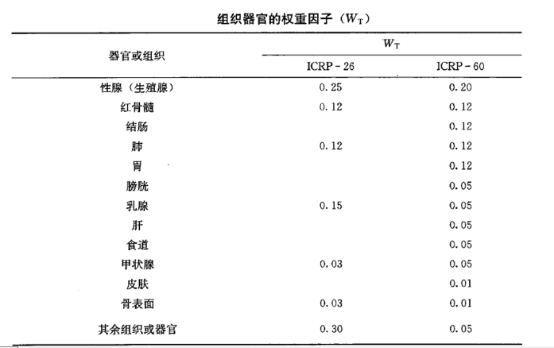
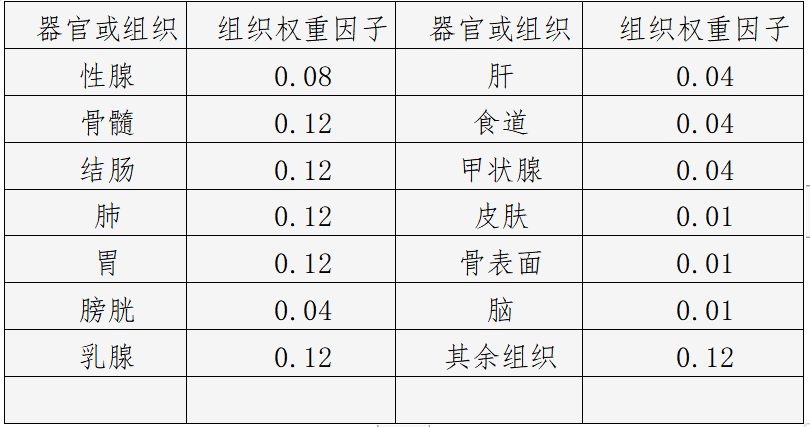

测量与仪器/剂量与单位
有效剂量
有效剂量与等效剂量同样使用Sv作为单位，但由于人体各组织器官对辐射的敏感度不同，所以即使接受相同的等效剂量，造成健康损失的几率却不同，
也就是说不同的器官组织照射相同的辐射量所造成的伤害不同。因此又用组织权重因子（WT)来表征组织或器官的辐射敏感性，代表组织T接受照射所导致
的随机效应的危险系数与全身受到均匀照射时的总危险系数的比值，见下表所示：


有效剂量当量（effective dose equivalent，HE）代表全身的辐射剂量，用来评估辐射可能造成我们健康效应的几率，使辐射防护走向定量化。其定义为各组织或器官的当量剂量（HT)与相应的组织权重因子（WT）的乘积的总和。
有效剂量的SI单位是希沃特（Sv），它代表了5.5%的癌症发生几率。有效剂量并不打算作为确定性健康影响的衡量标准，确定性健康影响是指一定会发生的急性组织损伤的严重程度，这是由吸收剂量的数量来衡量的。
有效剂量的概念是由沃尔夫冈·雅各比 (Wolfgang Jacobi) 提出的，并在1975年发表，该概念极具说服力，以至于ICRP将其作为 "有效剂量当量 "纳入1977年的一般性建议（第26号出版物）。 1991年，"有效剂量 "这一名称取代了 "有效剂量当量"。 自1977年以来，它是ICRP国际放射防护系统中剂量限制的核心量。
使用
根据 ICRP，有效剂量的主要用途是用于规划和优化辐射防护的前瞻性剂量评估，以及用于监管目的的剂量限值合规性证明。因此，有效剂量是用于监管目的的中心剂量。
iCRP 还表示，有效剂量对辐射防护做出了重大贡献，因为它能够将来自各种类型外部辐射的全身和局部照射以及放射性核素摄入的剂量相加。
外照射
人体局部或非均匀照射需要计算有效剂量，因为当量剂量不考虑受照组织，只考虑辐射类型。不同的身体组织以不同的方式对电离辐射作出反应，因此 ICRP 为特定的组织
和器官分配了敏感因子，以便在已知照射区域的情况下计算局部照射的影响。仅照射身体一部分的辐射场比同一场照射全身的风险要低。考虑到这一点，计算并求和已被辐
照的身体组成部分的有效剂量。这成为全身的有效剂量，剂量E. 它是可以计算但实际上无法测量的“保护”剂量。
内照射
有效剂量可以计算为待积剂量，即因吸入、摄入或注射放射性物质而产生的内部剂量。
计算

以下是我个人的想法：简单说就是有效剂量 = Σ (等效剂量 × 组织权重因子)
补充
实践中，因放射性照射引起的随机性效应（癌症等疾病）的发生概率与当量剂量之间的关系还与受照组织或器官有关，因为各种组织
器官对射线的敏感度是不一样的，而人体受到的任何照射几乎总是不止涉及到一个器官或组织。为了计算辐射给受到照射的有关器官
和组织带来的总的危险，在辐射防护中引入了组织权重因子这一概念，有效剂量就是考虑了这一因素后产生的，可以说这是一个既考
虑了射线种类也考虑了器官组织权重因子的量。有效剂量单位的专门名称也是希沃特(Sievert)，简称“希”，符号是“Sv”。